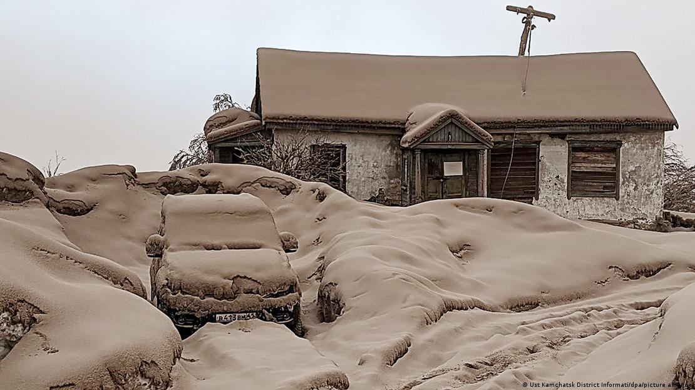

• As of late Feb, GJ superforecasters assigned ~70% probability to the conflict not ending before October 2024"ex-Israeli PM says that NATO blocked a ceasefire that both Putin & Zelensky wanted" (@BMarchetich) "Biden can’t seek Peace in Ukraine without a robust antiwar movement" (Jacobin) "Elections have almost no influence on cease-fire in 2023. But if the war continues in 2024, elections will become a major factor"
• Superforecasters on which year they expected the war to end: median 2025, minimum 2024 & maximum 2037
1. The Russia Ukraine War will not be over by the end of the year.Code red issued: volcano erupts, followed by earthquake in Russian Far East (Reuters)
2. Putin will not be removed from office.
3. Russia will not use nuclear weapons in Ukraine.
4. Western support for Ukraine will not cease.
5. Russia will not make significant territorial gains.
• Black Sea ports blocked & cheap Ukrainian grain stuck in central Europe, resulting price crash hit local farmers
• Poland’s governing PiS party relies on rural support & faces tight election
• EC says trade policy an EU-exclusive competence & unilateral actions “are not acceptable” (The Guardian)
"Note forecast was on the 3rd of Oct ['22].We had more uncertainty back then, & moving probability downwards somewhat rapidly seems correct" (@NunoSempere)Oct 2022: MIT physicist predicts "there's now a one-in-six chance of an imminent global nuclear war" (@tegmark) Oct 2022: Top political bettor predicts "chance of a nuke is VERY LOW" (@Domahhhh)
• Instead of further falling behind in leadership & training, Russia is using the Wagner Force to buy timeRussia’s commando units "gutted" according to Pentagon leaks (WaPo) Russia introduces new rules to draft more citizens into military (NPR)
• Some argue the Russian army is also eliminating the Wagner Group as a competitor (The Conversation)
• Electronic notifications will now be issued through the web portals that Russians use to pay their utility bills, taxes -- binding from the moment the government hits send
• With the new law, draftees are immediately banned from leaving the country
• Those who fail to show up at a recruitment office face a raft of new restrictions related to banking, selling property & access to a driver's license (NPR)
• Problem from Ukraine’s point of view is that the US & some of its allies have not followed up on their “whatever-it-takes” rhetoric to avoid a stalemateMoscow-appointed Crimea head says "we are ready": built “modern, in-depth defenses” & has “more than enough” troops (AP) "Russia has now completed three layers of defensive zones" in southeast Ukraine (The War Zone) Putin revokes decree underpinning Moldova's sovereignty in resolving Transdniestria (Reuters) Background: "Russia aims to link Crimea to Transnistria" (Balkan Insight, May 2022)
• If Ukraine runs out of air defenses & is exposed to Russia’s still large & capable air force, “that would be our nightmare” (Bloomberg)
• Dance between NATO surveillance aircraft & Russian fighter jets over the Black Sea has played out for yearsUK will provide Ukraine depleted uranium armour-piercing shells alongside Challenger 2 tanks, insists low radiation risk (BBC) Putin says Russia will be "forced to react" (BBC) "There is no doubt this will end badly for London" - Foreign Minister Lavrov (BBC)
• The British aircraft (RC-135 Rivet Joint) is often manned with a crew of around 30 people (NYT)
• Depleted uranium (DU) is a very heavy substance used to harden rounds so that they can penetrate armourBackground: "DU will be phased out, not for health reasons but for military ones. New generation of anti-armour weapons being fielded" (The Guardian, May 2000)
• DU weapons go through solid objects then erupt in a burning cloud of vapour, which settles as poisonous & weakly radioactive dust
• "The chemical toxicity of DU is considered a more significant issue than the possible impacts of its radioactivity" (BBC)
• EU agreed to deliver one million rounds of 155-mm shells to Ukraine within 12 months — a benchmark that the US has already metGermany approves Poland’s request to send 5 more MiG-29 jets to Ukraine, 9 jets already sent (DW) Slovakia to send 13 MiG-29 fighter jets to Ukraine (AFP) Russia appears to have sabotaged Slovak jets (Insider) Norway's largest ever expulsion of Russian diplomats, Russia says it will respond (Reuters) ‘You stood with us shoulder to shoulder’: Zelensky visits Poland, awarded highest honor (CNN) Polish president in Austria to appeal for Ukraine support (TVP) Austrian politicians walk out of Zelenskyy speech (Al Jazeera) Ukraine wants India to play bigger role in ending war, says deputy foreign minister (AP)
• 155-mm artillery shells were among the first things European countries trimmed from their defense budgets after the Cold War
• It would take at least 3 years just to fulfill Norway’s order — which is still being negotiated & the government has yet to pay for (NYT)